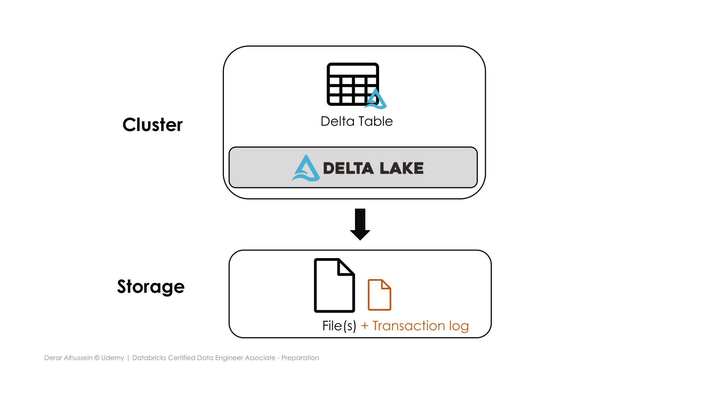
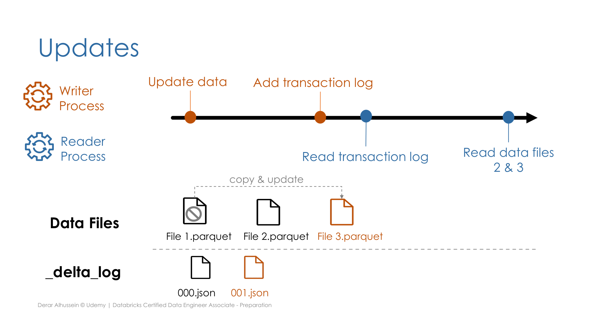

Das vorangegangene Kapitel dieser Section hat Delta Lake bereits als Speicherschicht der Databricks-Plattform eingeführt. Dieses Kapitel öffnet die Motorhaube und erklärt den zentralen Mechanismus, der Delta Lake seine Zuverlässigkeit verleiht: das Transaktionsprotokoll (Delta Log).
1. Delta Lake: Was es ist – und was nicht
Delta Lake ist ein quelloffenes Speicher-Framework, keine proprietäre Technologie. Es ist eine Speicherschicht, kein eigenes Dateiformat und kein Speichermedium – darunter liegen weiterhin gewöhnliche Parquet-Dateien. Und es ist auch kein Data Warehouse oder Datenbankdienst, sondern das Fundament, auf dem sich eine Lakehouse-Architektur erst aufbauen lässt. Technisch ist Delta Lake eine Komponente, die als Teil des Databricks Runtime auf dem Cluster läuft: Erstellt man eine Delta-Tabelle, landen die eigentlichen Daten als eine oder mehrere Parquet-Dateien im Speicher – zusätzlich schreibt Delta Lake aber ein Transaktionsprotokoll mit.

Delta Lake läuft als Komponente des Databricks Runtime auf dem Cluster; im Speicher liegen sowohl die Datendateien als auch das Transaktionsprotokoll.
2. Das Transaktionsprotokoll: Single Source of Truth
Der Delta Log ist eine geordnete Aufzeichnung jeder einzelnen Transaktion, die jemals auf einer Tabelle ausgeführt wurde – abgelegt als fortlaufend nummerierte JSON-Dateien im Unterordner _delta_log. Jede committete Transaktion hält fest: welche Operation ausgeführt wurde (z. B. Insert oder Update), welche Bedingungen/Filter dabei galten, und welche Datendateien dadurch hinzugekommen oder entfernt wurden. Jede Leseanfrage an eine Delta-Tabelle prüft zuerst dieses Protokoll, um die aktuell gültige Version der Daten zu ermitteln – die Datendateien selbst werden nie direkt und ungeprüft gelesen.
3. Wie Schreib- und Lesevorgänge zusammenspielen
Vier Szenarien zeigen, warum dieser Mechanismus so robust ist:
Normaler Schreib-/Lesevorgang: Ein Schreibprozess legt Datendateien an und trägt anschließend einen neuen Log-Eintrag ein. Ein Leseprozess liest zuerst den Log und weiß dadurch genau, welche Dateien zur aktuellen Tabellenversion gehören.
Update (Copy-on-Write): Delta Lake ändert eine bestehende Datei nie direkt. Stattdessen wird eine Kopie mit den aktualisierten Werten als neue Datei angelegt, und der neue Log-Eintrag vermerkt, dass die alte Datei nicht mehr Teil der aktuellen Version ist – sie wird nicht sofort gelöscht, sondern bleibt bis zu einem späteren VACUUM (siehe nächstes Kapitel) physisch bestehen.
Gleichzeitige Schreib- und Lesevorgänge: Solange ein Schreibvorgang noch nicht committet (also noch kein neuer Log-Eintrag existiert), sieht ein parallel laufender Lesevorgang ausschließlich den zuletzt vollständig committeten Stand – nie einen unvollständigen Zwischenzustand.
Fehlgeschlagene Schreibvorgänge: Bricht ein Schreibvorgang mit einem Fehler ab, wird schlicht kein neuer Log-Eintrag geschrieben. Eine dabei bereits teilweise geschriebene, unvollständige Datei bleibt zwar im Speicher liegen, wird aber von keinem Log-Eintrag referenziert und daher von keinem Leseprozess jemals gelesen.

Ein Update kopiert die betroffene Datei statt sie zu überschreiben (Copy-on-Write) und aktualisiert erst danach das Transaktionsprotokoll.
4. Die Vorteile im Überblick
ACID-Transaktionen auch auf reinem Objektspeicher (S3, ADLS, GCS), der von sich aus keine Transaktionsgarantien bietet.
Skalierbare Metadatenverwaltung – auch bei Tabellen mit Milliarden Zeilen und Zehntausenden Dateien bleibt das Protokoll effizient abfragbar.
Vollständiger Audit-Trail aller Änderungen, da jede Transaktion protokolliert wird (Basis für Time Travel, siehe nächstes Kapitel).
Aufbau auf offenen Standardformaten – Parquet für Daten, JSON für das Protokoll – statt auf einem proprietären Binärformat.
Ergänzt aus der offiziellen Databricks-Dokumentation: Um das wiederholte Auflisten aller JSON-Dateien bei sehr langer Historie zu vermeiden, schreibt Delta Lake automatisch alle 10 Commits eine binäre Checkpoint-Datei (Parquet-Format), die den kompletten Tabellenzustand zu diesem Zeitpunkt zusammenfasst – ein Leseprozess muss dann nur noch den letzten Checkpoint plus die seither hinzugekommenen JSON-Dateien auswerten, statt das gesamte Protokoll von Anfang an durchzugehen.
Quelle: Work with Delta Lake table history – Databricks-Dokumentation
Databricks-Dokumentation (Deutsch) — erstellt aus internem Kursmaterial, ergänzt mit Inhalten der offiziellen Databricks-Dokumentation (docs.databricks.com).